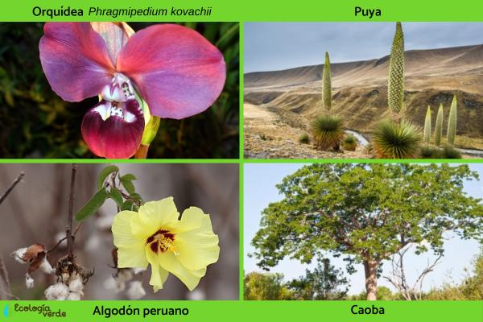

| SIERRA PERUANA |
Características de la Sierra Peruana:
La Sierra Peruana es una región montañosa que se extiende a lo largo de los Andes peruanos, abarcando una gran diversidad de paisajes, desde altiplanos hasta profundos valles y picos nevados. Esta región es conocida por su biodiversidad única, albergando una variedad de especies vegetales y animales adaptadas a diferentes altitudes y microclimas. La Sierra también juega un papel crucial en la regulación del clima y en la provisión de recursos hídricos para la agricultura y consumo humano en la costa peruana. |
Flora de la Sierra Peruana:

La flora de la Sierra Peruana incluye una variedad de especies adaptadas a diferentes niveles altitudinales. Entre ellas se encuentran queñuas, ichus y una diversidad de orquídeas y bromelias. Estas plantas no solo son importantes para la biodiversidad local, sino también para la conservación del suelo y la regulación del agua en los ecosistemas de montaña. |
Fauna de la Sierra Peruana:La fauna de la Sierra Peruana es diversa y única, adaptada a las condiciones extremas de las montañas. Incluye especies emblemáticas como la vicuña, el cóndor andino, el oso de anteojos y el puma. Estos animales desempeñan roles importantes en el ecosistema al mantener el equilibrio natural y proporcionar servicios ecosistémicos esenciales como la dispersión de semillas y la regulación de poblaciones de presas. |